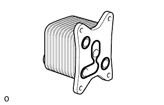
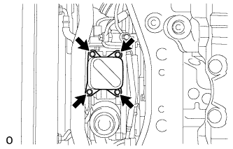

ENGINE OIL COOLER > INSTALLATION |
| 1. INSTALL OIL COOLER ASSEMBLY |
 |
Apply a light coat of engine oil to 2 new O-rings and a new oil cooler gasket, and set them to the oil cooler.
 |
Install the oil cooler with the 2 bolts and 2 nuts.
| 2. ADD ENGINE OIL |
Add fresh oil.
| Oil Grade | Oil Viscosity (SAE) |
| G-DLD-1, API CF-4, API CF or ACEA B1 (You may also use API CE or CD) | - 5W-30 - 10W-30 - 15W-40 - 20W-50 (5W-30 is best choice for fuel economy and good starting in cold weather). |
| Item | Specified Condition |
| Drain and refill with oil filter change | 9.0 liters (9.5 US qts, 8.0 Imp. qts) |
| Drain and refill without oil filter change | 8.0 liters (8.5 US qts, 7.0 Imp. qts) |
| Dry fill | 9.7 liters (10.3 US qts, 8.5 Imp. qts) |
Install the oil filler cap.
| 3. ADD ENGINE COOLANT |
 |
Remove the engine air bleed cap.
 |
Connect a clear hose to the engine air bleed pipe.
 |
Using a wrench, remove the vent plug.
 |
Fill the radiator with TOYOTA SLLC to the radiator reservoir filler neck.
| Item | Specified Condition |
| Front heater only | 14.8 liters (15.6 US qts, 13.0 Imp. qts) |
| Front heater and rear heater | 17.6 liters (18.6 US qts, 15.5 Imp. qts) |
| Front heater with viscous heater | 15.2 liters (16.1 US qts, 13.4 Imp. qts) |
| Front heater and rear heater with viscous heater | 18.0 liters (19.0 US qts, 15.4 Imp. qts) |
|
Install the vent plug.
|
Disconnect the clear hose from the engine air bleed pipe.
|
Install the engine air bleed cap when coolant comes out.
Install the radiator reservoir cap.
Start the engine.
Maintain an engine speed of 3000 rpm for approximately 10 minutes so that the thermostat opens and air bleeding is performed.
Stop the engine, and wait until the engine coolant cools down to ambient temperature.
 |
Check that the coolant level is between the FULL and LOW lines.
If the coolant level is above the FULL line, drain coolant so that the coolant level is between the FULL and LOW lines.
| 4. INSPECT FOR ENGINE OIL LEAK |
Warm up the engine and check for an engine oil leak.
| 5. INSPECT FOR COOLANT LEAK |
 |
Fill the radiator with coolant and attach a radiator cap tester to the radiator reservoir.
Warm up the engine.
Using the radiator cap tester, increase the pressure inside the radiator to 123 kPa (1.3 kgf/cm2, 17.8 psi), and check that the pressure does not drop.
If the pressure drops, check the hoses, radiator and water pump for leaks.
If no external leaks are found, check the cylinder block and cylinder head.
| 6. INSTALL NO. 1 ENGINE UNDER COVER SUB-ASSEMBLY |
 |
Install the engine under cover with the 10 bolts.
| 7. INSTALL FRONT FENDER SPLASH SHIELD SUB-ASSEMBLY RH |
 |
Install the splash shield with the clip, and then install the 3 bolts and screw.
| 8. INSTALL FRONT FENDER SPLASH SHIELD SUB-ASSEMBLY LH |
Install the splash shield with the clip, and then install the 3 bolts and screw.
| 9. CHECK ENGINE OIL LEVEL |
Warm up the engine, stop the engine and wait 5 minutes. The engine oil level should be between the dipstick low level mark and full level mark.
If low, check for leakage and add oil up to the full level mark.